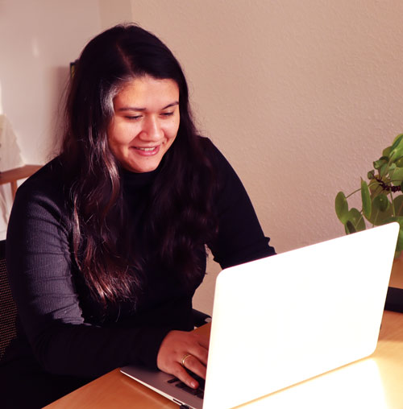
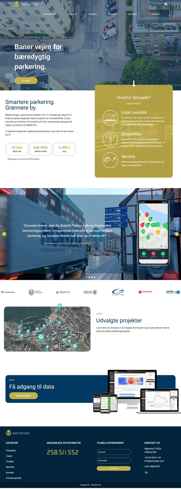
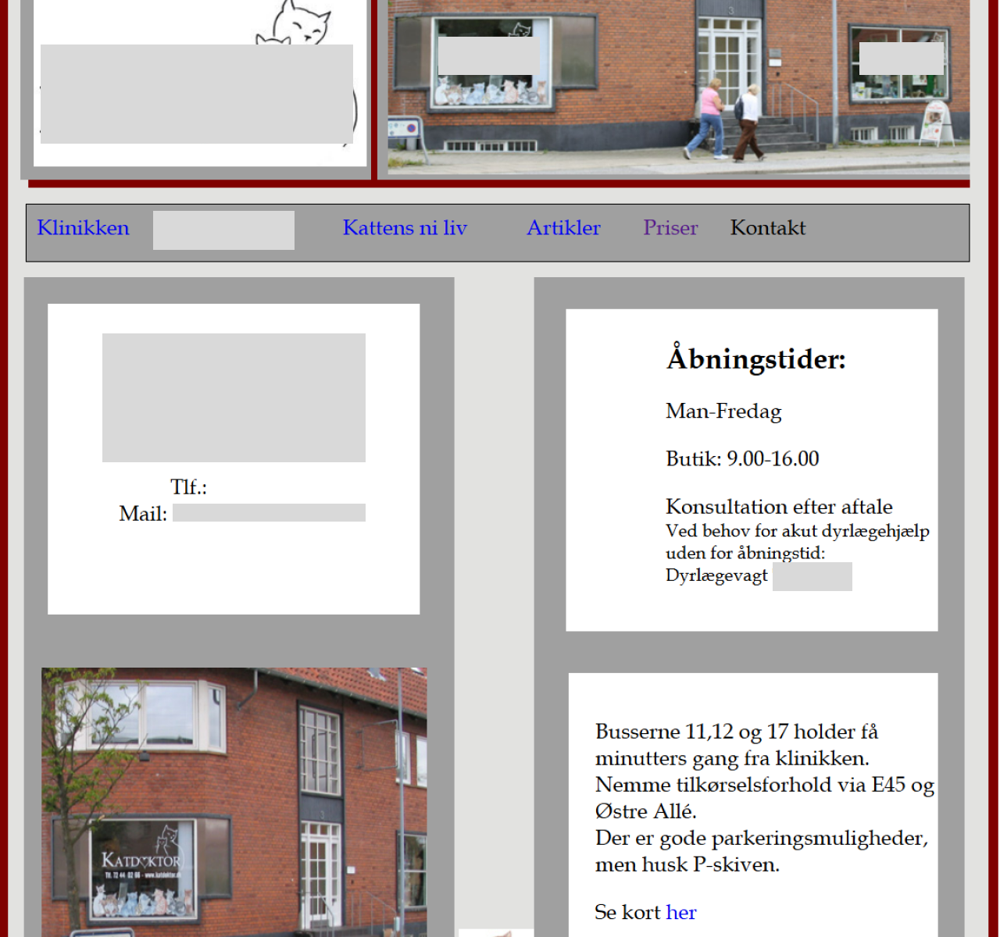
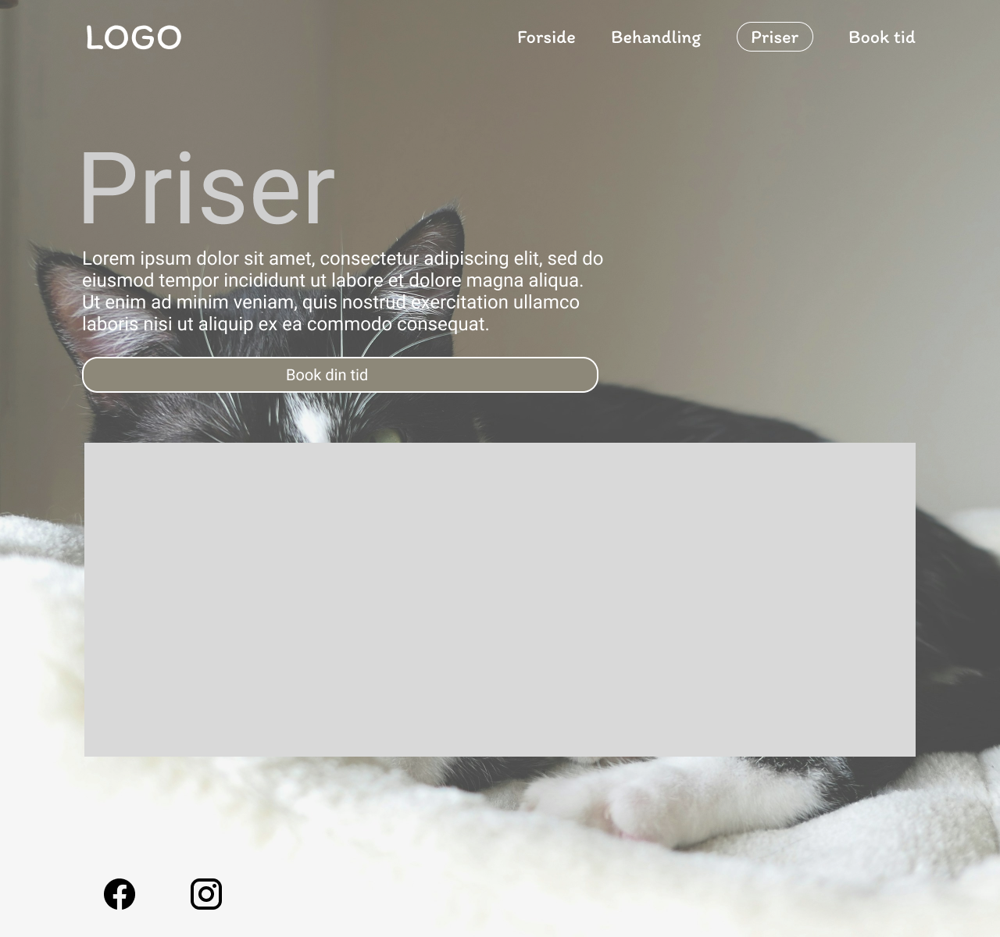

User experience(UX)
Research, brugerundersøgelse, wireframes, usability testing
Hej😀
Mit navn er Nanna Supavadee Pedersen og velkommen til
mit portfolio. Jeg er en kreativ frontend-specialist med blik for detaljen og med hjertet i
processen, og jeg elsker at bygge bro mellem en god idé og en færdig digital løsning.
Med en værktøjskasse fyldt med frontend-teknikker, animationer og et skarpt øje for interface
design, hjælper jeg dig med at gøre dit projekt overskueligt og professionelt.
Jeg driver lysten til at skabe noget unikt og arbejder altid dedikeret for at sikre, at brugeren får
den bedst mulige oplevelse. Min tilgang er fleksibel, iderig og altid med et stort engagement.

En 2-årig erhvervsakademiuddannelse, UCN Nordjylland. Der fokuserer på digitalt design, UX, kodning og indholdsproduktion. Uddannelsen er praktisk orienteret med fokus på webudvikling og apps, og den indeholder et obligatorisk praktikophold, som ruster til job som UX-designer, frontend-udvikler eller digital designer.
Forstå brugerens behov og mål gennem research, interwiew og analyse af data
Strukturere brugerens behov og mål i et overblik userflows og flows
wireframes og prototyper
Designe en løsning der matcher brugerens behov
Teste løsningen med brugeren. Forfine løsningen baseret på feedback fra brugeren test og iterere indtil løsningen er optimal.
Research, brugerundersøgelse, wireframes, usability testing
Prototyping, responsive design og visuel identitet
HTML5, CSS3, Javascript
Figma, Adobe XD, Visual Studio Code, WordPress
Hos Sensade ApS har jeg arbejdet med design og udvikling af prototyper til virksomhedens dashboard og videreudvikle deres hjemmeside samt bidrage til andre digitale opgaver sideløbende. Arbejdet har givet mig erfaring med at omsætte idéer og behov til konkrete designløsninger.

Redesignet en hjemmeside på kun 5 minutter med værktøjet figma. Her ligger jeg vægt på, at den skal være brugervenlig og give de nødvendig informationer til brugeren. Jeg har arbejdet med at skabe en visuel identitet og et design, der matcher virksomhedens værdier og målgruppe.
Hjemmeside før

Hjemmeside efter

Jeg er klar på at designe og udvikle digitale løsninger, der er brugervenlige og visuelt tiltalende til jeres bruger.